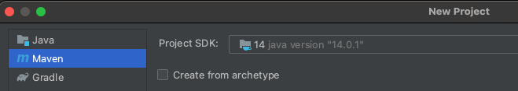

Coordenação: Copycat
Copycat é um arcabouço de replicação de máquinas de estados implementado pela Atomix. Na base do Copycat está uma implementação do Raft. Sobre o Raft, uma API simples mas moderna permite a criação de máquinas de estados usando lambdas, futures, e o estilo fluent de encadeamento de invocações.
- Classe com um único método.
1 2 3 4 5 6 7 8 | |
- Classe anônima - uso único
1 2 3 4 5 6 | |
- Lambda
1 2 3 4 | |
- Encadeamento
1 2 3 4 5 | |
- Promessa de computação e resultado.
1 2 | |
- Quando será executado? Em algum momento.
- Como pegar o resultado?
1 2 3 4 | |
- Em qual thread? Em algum thread. Depende do Executor Service usado.
Há várias versões do Copycat disponíveis, com vantagens e desvantagens.
Versões
- Baseado em http://atomix.io/copycat/docs/getting-started/ e https://www.baeldung.com/atomix
- Código funcional em https://github.com/pluxos/atomix_labs
- Documentação oficial removida
- Melhor desempenho
- Documentação ruim ou inexistente
- https://github.com/atomix/atomix
- em Go
- evolução rápida
- o código é a documentação
Aqui usaremos a versão 1.1.4, que apesar de antiga, é a melhor documentada atualmente, pelo tutorial referenciado acima.
- Clone e compile o projeto
- Instale dependências:
- git
- maven
- JDK >= 1.8
git clone https://github.com/pluxos/atomix_labscd atomix_labscd replicationmvn compilemvn test
Você deve ver uma saída semelhante à seguinte, o que quer dizer que seu código está compilando perfeitamente.
1 2 3 4 5 6 7 8 9 | |
Antes de começar a escrever suas próprias máquinas de estados, familiarize-se com a estrutura do projeto em https://github.com/pluxos/atomix_labs/tree/master/replication/src/main/java/atomix_lab/state_machine
Observe que há três pastas:
type- tipos dos dados mantidos pela replica (Edge e Vertex)
Os tipos são serializáveis para que o Java saiba como transformá-los em bytes.command- estruturas que contêm informações para modificar os tipos
Os comandos serão enviados do cliente para o cluster e são naturalmente serializáveis.client- cria comandos e os envia para serem executados no cluster
Respostas podem ser esperadas síncrona ou assincronamente.server- recebe os comandos na ordem definida pelo Raft e os executa
O projeto foi construído seguindo as instruções no tutorial mencionado antes, saltando-se a parte dos snapshots, isto é:
- crie um projeto maven
eclipse tem template para isso - adicione dependências no
pom.xml
como só criei um projeto, coloquei as dependências tanto do cliente quanto do servidor - defina
Commandque modifiquem o estado das réplicas - defina
Queriesque consultem o estado das réplicas - implemente a réplica para lidar com os comandos
- implemente o cliente para emitir comandos
Para executar um servidor, você precisa passar diversos parâmetros
- identificador do processo (inteiro)
- IP do processo com identificador 0
- porta do processo com identificador 0
- IP do processo com identificador 1
- porta do processo com identificador 1
- ...
Sabendo seu identificador, o servidor sabe em qual porta escutar e em quais IP/porta se conectar para se comunicar com os outros servidores.
Para testar o projeto, execute três servidores, em três terminais distintos. Usando o maven, da linha de comando, basta executar os seguintes comandos[^\]:
1 2 3 4 5 6 7 8 9 10 11 | |
O cliente não precisa de um identificador, apenas dos pares IP/porta dos servidores. Por exemplo, use o comando:
1 2 3 | |
Exercício
Uma vez executado o projeto, modifique-o para incluir uma nova operação (Command) e nova consulta (Query), de sua escolha.
Estudo de caso: Ratis
Ratis é um arcabouço de coordenação recentemente emancipado como um projeto no Apache. Embora mal documentado, o projeto tem alguns exemplos que demonstram como usar abstrações já implementadas. A seguir veremos um passo-a-passo, baseado nestes exemplos, de como usar o Ratis para implementar uma máquina de estados replicada.
Crie um novo projeto Maven com o nome ChaveValor (eu estou usando IntelliJ, mas as instruções devem ser semelhantes para Eclipse).

Abra o arquivo pom.xml do seu projeto e adicione o seguinte trecho, com as dependências do projeto, incluindo o próprio Ratis.
1 2 3 4 5 6 7 8 9 10 11 12 13 14 15 16 17 18 19 20 21 22 23 24 25 26 27 28 29 30 31 32 33 34 35 36 37 38 39 40 41 42 43 44 45 46 47 48 | |
Adicione também o plugin Maven e o plugin para gerar um .jar com todas as dependências. Observe que estou usando Java 14, mas você pode mudar para a sua versão.
1 2 3 4 5 6 7 8 9 10 11 12 13 14 15 16 17 18 19 20 21 22 23 24 25 26 27 28 29 | |
Crie uma nova classe denominada Cliente no arquivo Cliente.java.
Nesta classe, iremos criar um objeto RaftClient que será usado para enviar operações para os servidores.
Esta classe é importada juntamente com outras várias dependências, adicionadas no pom.xml, que devemos instanciar antes do RaftClient.
Neste exemplo eu coloco praticamente todos os parâmetros de configuração do Ratis hardcoded para simplificar o código. Obviamente, você deveria passar estes parâmetros como argumentos para o programa ou lê-los de um arquivo de configuração.
1 2 3 4 5 6 7 8 9 10 11 12 13 14 15 | |
O campo raftGroupId identifica um cluster Ratis; isso quer dizer que um mesmo processo pode participar de vários clusters, mas aqui nos focaremos em apenas um. O valor do campo deve ter exatamente 16 caracteres, o que soma 32 bytes em Java, e será interpretado como um UUID.
id2addr é um mapa do identificador de cada processo no cluster para seu endereço IP + Porta.
Aqui usei várias portas distintas porque todos os processos estão rodando na mesma máquina, mas se estivesse executando em máquinas distintas, com IPs distintos, poderia usar a mesma porta em todos.
addresses é uma lista de RaftPeer construída a partir de id2addr.
O campo raftGroup é uma referência a todos os servidores, associados ao identificador do grupo, raftGroupId.
1 2 3 4 5 6 7 8 9 10 11 12 13 14 15 | |
Uma vez criado o grupo, criamos o cliente usando a fábrica retornada por RaftClient.newBuilder().
A fábrica deve ser configurada com os dados do grupo e o tipo de transporte, neste caso gRPC.
Também é necessário o identificador do processo que está se conectando ao grupo; neste caso, usamos um identificador aleatório qualquer, diferente do que faremos com os servidores.
1 2 3 4 5 6 7 8 | |
Uma vez criado o cliente, podemos fazer invocações de operações nos servidores. Cada operação será invocada em todos os servidores, na mesma ordem.
Este protótipo suporta duas operações, add e get, incluindo algumas variações, que ignoraremos por enquanto.
A operação add é codificada como uma String, add:k:v, onde k e v são do tipo String. add:k:v adiciona uma entrada em um mapa implementado pelo nosso servidor com chave k e valor v.
Já a operação get:k recupera o valor v associado à chave k, se presente no mapa.
O método RaftClient.io().send é usado para enviar modificações para as réplicas e deve, necessariamente, passar pelo protocolo Raft.
Já o método RaftClient.io().sendReadOnly é usado para enviar consultas a qualquer das réplicas.
Ambos os métodos codificam o comando sendo enviado (add:k:v ou get:k) no formato interno do Ratis para as réplicas e retorna um objeto RaftClientReply, que pode ser usado para pegar a resposta da operação.
O código é autoexplicativo.
1 2 3 4 5 6 7 8 9 10 11 12 13 14 15 16 17 18 19 20 21 22 23 24 25 26 27 28 29 30 31 32 | |
Uma vez criado o cliente, crie a classe Servidor, no arquivo Servidor.java; a parte inicial do código é semelhante à do cliente.
1 2 3 4 5 6 7 8 9 10 11 12 13 14 15 16 17 18 19 20 21 22 23 24 25 26 27 28 29 30 31 32 33 34 35 36 37 | |
A primeira diferença vem na necessidade de identificar o servidor dentro do conjunto de servidores, o que é feito com um RaftPeerId.
Como cada servidor deve usar um identificador único, do conjunto pré-determinado em id2addr, o identificador é passado como argumento para o programa, obrigatoriamente.
1 2 3 4 5 6 7 8 | |
Encare a seção seguinte como uma receita, mas observe que o método RaftServerConfigKeys.setStorageDir recebe o nome de uma pasta como argumento, que será usada para armazenar o estado da máquina de estados.
Se você executar o servidor múltiplas vezes, a cada nova execução o estado anterior do sistema será recuperado desta pasta.
Para limpar o estado, apague as pastas de cada servidor.
1 2 3 4 | |
A máquina de estados em si é especificada no próximo excerto, em setStateMachine, que veremos a seguir.
1 2 3 4 5 6 7 8 9 | |
Uma vez iniciado o servidor, basta esperar que ele termine antes de sair do programa.
1 2 3 4 5 | |
Vamos agora para a definição da classe MaquinaDeEstados, no arquivo MaquinaDeEstados.java.
Esta classe deve implementar a interface org.apache.ratis.statemachine.StateMachine e seus vários métodos ou, mais simples, estende org.apache.ratis.statemachine.impl.BaseStateMachine, a abordagem que usaremos aqui.
1 2 | |
Por enquanto, ignoraremos o armazenamento do estado em disco, mantendo-o simplesmente em memória no campo key2values, e simplesmente implementaremos o processamento de comandos, começando pela implementação do método query.
Este método é responsável por implementar operações que não alteram o estado da máquina de estados, enviadas com o método RaftClient::sendReadOnly. A única query no nosso sistema é o get.
No código, o conteúdo da requisição enviada pelo cliente deve ser recuperado e quebrado em operação (get) e chave, usando : como delimitador.
Recuperado o valor associado à chave, o mesmo é colocado em um CompletableFuture e retornado.
1 2 3 4 5 6 7 8 9 10 | |
O método applyTransaction implementa operações que alteram o estado, como add, enviadas com o método RaftClient::send.
Da mesma forma que em get, a operação deve ser recuperada e quebrada em operação (add), chave e valor, usando : como delimitador.
1 2 3 4 5 6 7 8 9 10 11 12 13 14 | |
Pronto, você já tem uma máquina de estados replicada, bastando agora apenas compilá-la e executá-la.
Para compilar, da raiz do projeto execute o comando mvn package.
A primeira vez que faz isso pode demorar um pouco pois várias dependências são baixadas da Internet.
Ao final da execução do comando você deveria ver algo semelhante ao seguinte
1 2 3 4 5 6 7 | |
Então, em três terminais diferentes, execute os seguintes comandos:
1 2 3 | |
Para executar o cliente, em um outro terminal, faça, por exemplo,
1 2 3 4 | |
Todo o código está disponível no Github
Exercício
- Adicionar operações
delclear
Operações assíncronas
TODO
- Operações assíncronas usando
async()em vez deio(). CompletableFuture
Leituras "velhas"
TODO
- stale reads usando
sendStaleReadem vez desendRead. - índice inicial
- nó
java -cp target/ChaveValor-1.0-SNAPSHOT-jar-with-dependencies.jar Cliente get_stale k1 p1
-
O
\\no final da linha é só para mostrar que o comando continua na próxima e facilitar a visualização. Na hora de executar, use apenas uma linha, sem o\\. ↩